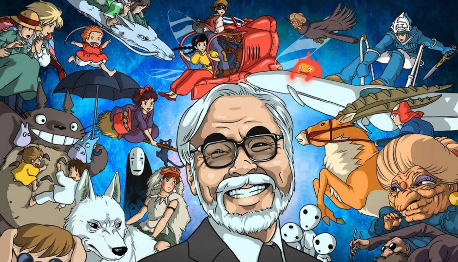

Sobre o Studio Ghibli
O Studio Ghibli é um estúdio de animação japonês, sediado em Koganei, Tóquio. Fundado em 1985, o estúdio já produziu 21 longas de animação, sendo o primeiro O Castelo no Céu (1986) e o mais recente As Memórias de Marnie (2014). O Studio Ghibli foi fundado em 1985 por Hayao Miyazaki, Isao Takahata, Toshio Suzuki e Yasuyoshi Tokuma, logo após o sucesso de Nausicaä do Vale do Vento, no ano anterior. O estúdio lançou seu primeiro filme, O Castelo no Céu, no ano seguinte. O logotipo da empresa é o Totoro, o personagem do filme Meu Amigo Totoro, lançado em 1988. Com exceção de seis produções, todos os filmes do estúdio foram dirigidos por Hayao Miyazaki e Isao Takahata. Toshio Suzuki, por sua vez, é o produtor da maioria deles. Em 2001, o Museu Ghibli, um museu dedicado as obras do estúdio, foi inaugurado.
